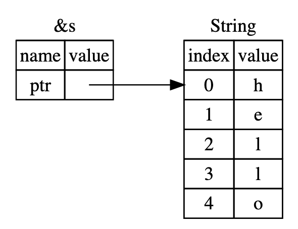
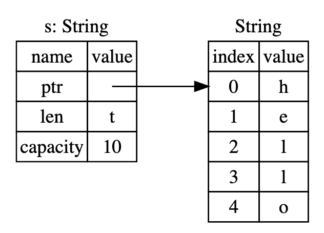
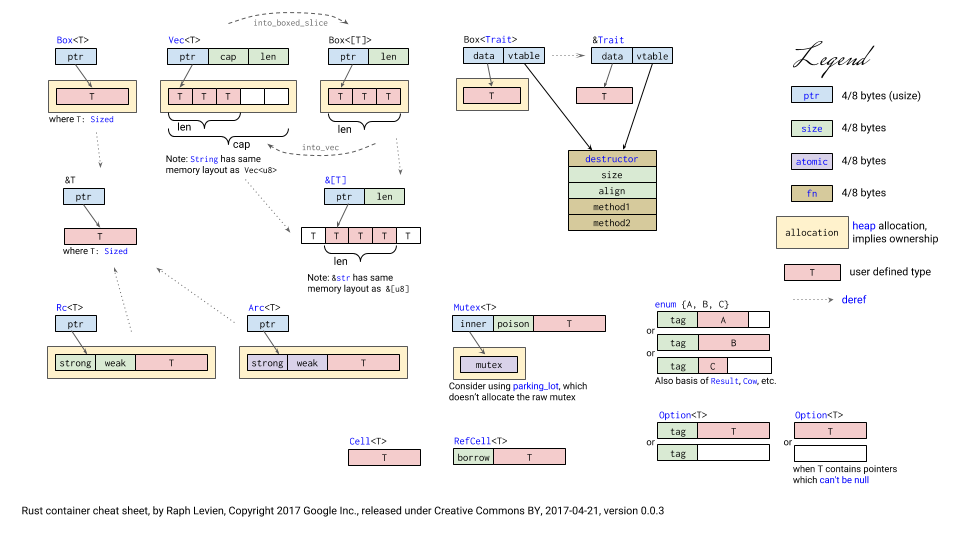
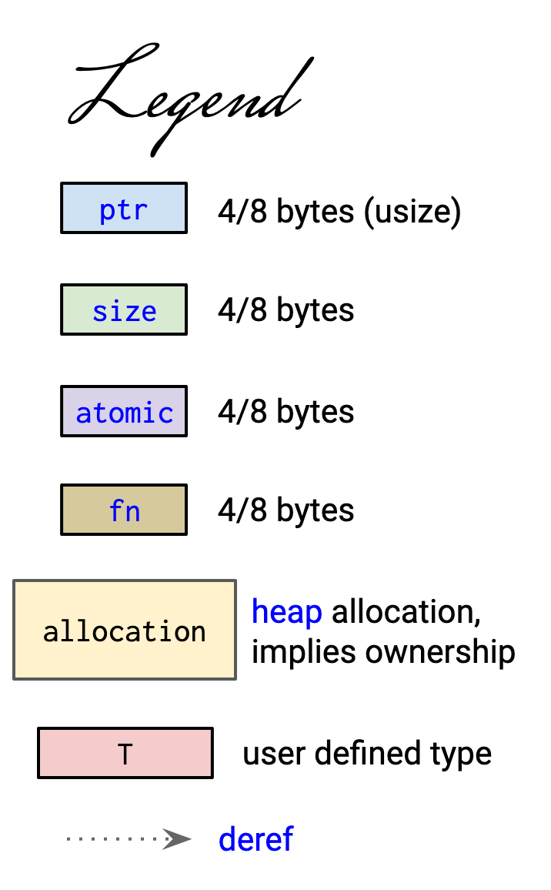
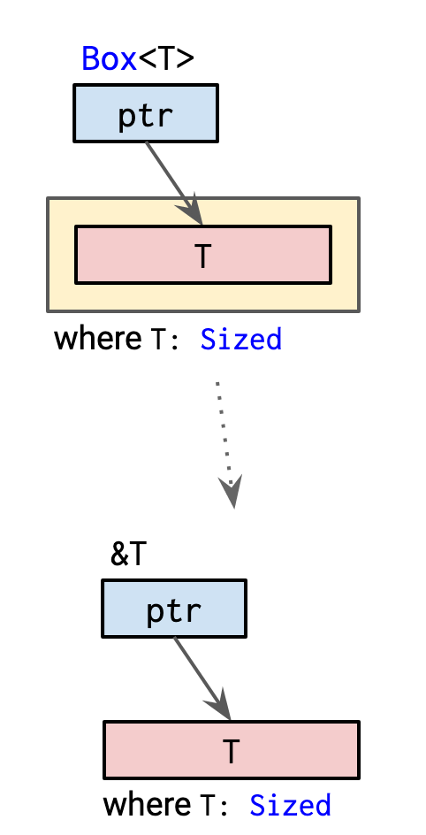
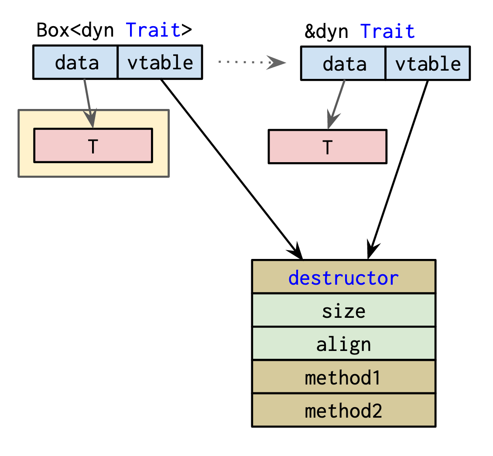
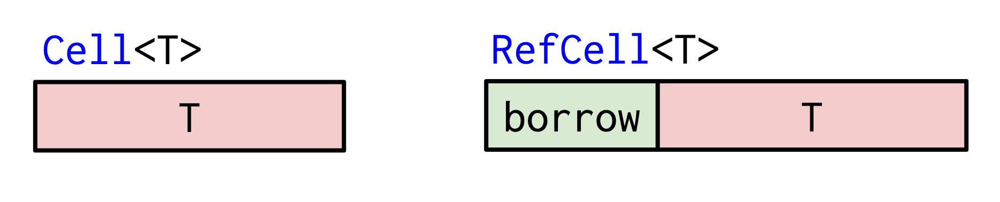
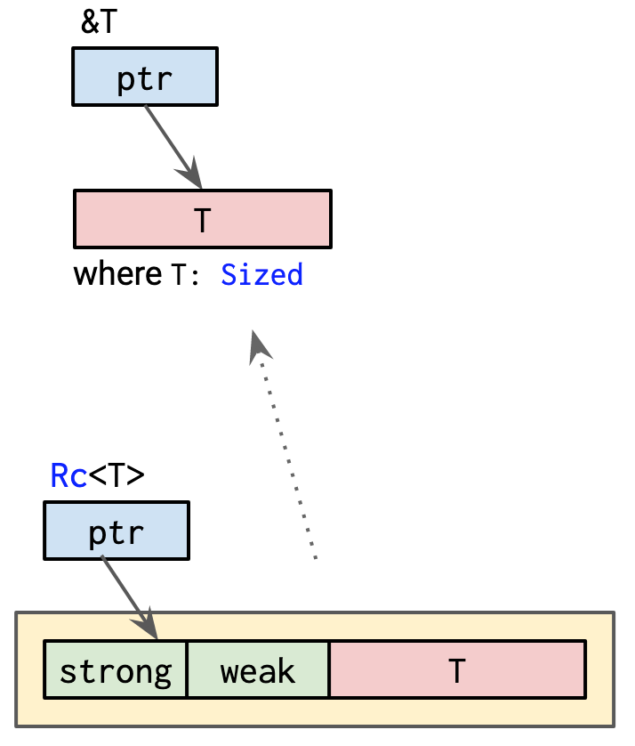
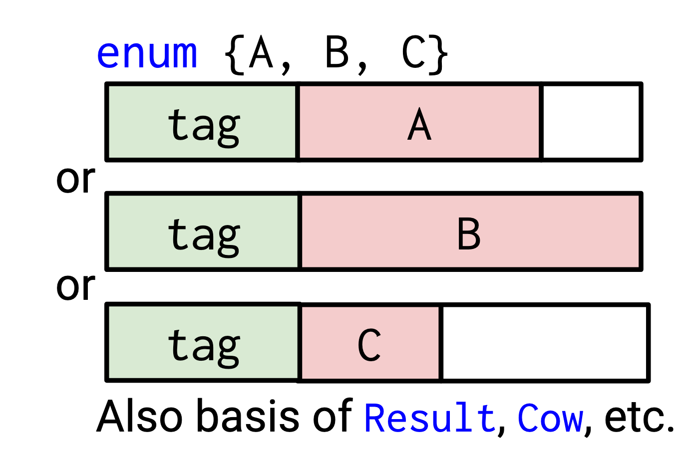

class: middle, center # Rust Smart Pointers ### 最燒腦的智慧指標 <img style="border-radius: 50px" src="https://www.gravatar.com/avatar/67644641ead7ae60a795a14b7e102973?s=100" alt="Weihang Lo"> <a href="https://github.com/weihanglo">@weihanglo</a> --- # Outline - What is a pointer? - What are "Smart Pointers"? - Smart pointers in standard library - Smart pointers in the wild --- # What is a pointer? An object storing the **memory address** of **a value** located in computer memory. A pointer is able to **obtain the stored value** at that memory location, a.k.a **dereference**.  --- # What is a pointer in Rust? ```rust let mut value = 1u8; // create a mutable pointer (reference) to the value let ptr = &mut value; // deferences the pointer (obtains underlying value) *ptr += 2; // original value has changed! assert_eq!(value, 3); ``` --- # What is a pointer in Rust? 1. There is a type called "[Reference][primitive-reference]". 2. References are **first-class values** in Rust. That means they can be moved, copied, stored in struct and returned from functions. 3. Can be either **immutable** or **mutable** to the value referenced to. - shared (immutable) references (`&`) - mutable refernces (`&mut`) 4. Shared references impl [`Copy`][trait-copy] trait: copying itself, a.k.a **shallow copy**. 5. Mutable references do not impl `Copy` trait to prevent creating multiple writable aliases. > Pointer, reference and borrow are interchangeable in most cases in Rust. [primitive-reference]: https://doc.rust-lang.org/std/primitive.reference.html [trait-copy]: https://doc.rust-lang.org/std/marker/trait.Copy.html --- # What are "Smart Pointers"? - A data structure that simulates the behavior of a normal pointer. - Providing additional features, such as - disposing resources when a pointer goes out of scope - allocating data on the heap - automatic memory management - Also known as "**Fat Pointer**" for storing additional metadata such as capacity, reference counts. - Not smart enough to be an artifical intelligence. --- ## What are "Smart Pointers" in Rust? - 特殊的資料結構，模擬一般指標的行為。 - 提供許多額外的功能。 - 部分智慧指標可動態配置記憶體（Dynamic allocation）。 - 部分智慧指標封裝 immutable data 後，仍可以在 runtime 修改其值。 - 又稱「胖指標」，因為儲存指向資料的指標外，通常會儲存額外資訊，例如陣列長度，空間需求稍大。  --- ## 如何使用 `struct` 模擬指標 必須做到兩件事： - 確認 dereference 時可解開引用，取得底層值 -> 實作 `Deref` trait - 確認指標結束生命週期時，會正確釋放資源 -> 實作 `Drop` trait 符合上述要件，並在 safe Rust 前提下實作的智慧指標，就可消弭絕大多數記憶體問題，例如 double free 或 wild pointer。 > **Smart Pointer in Rust ＝ Data structure + Deref + Drop** --- ## `Deref` trait - 用來多載解引用運算子 `*`（dereference）的 trait。 - 有一個 required method `fn deref(&self) -> &Self::Target` - `DerefMut` 則是用在 `&mut` 的 dereference。 - Rust 有很多 implicit dereference，實作 `Deref` trait 會讓生活好過很多。 ```rust pub trait Deref { /// The resulting type after dereferencing. type Target: ?Sized; /// Dereferences the value. fn deref(&self) -> &Self::Target; } ``` ```rust use std::ops::Deref; fn main() { let s = &1u8; assert_eq!(&1, s); assert_eq!(1, *s); assert_eq!(&1, s.deref()); // fn deref() -> &u8 } ``` --- ## Implicit dereference 為了讓大家方便寫 code，不用再區分 `obj.method`、`obj->method`、`(*obj).method`，Rust 幫我們統一介面，只要是函數傳參或方法呼叫，當 - 對指向 value type 的指標操作時，就執行原本的動作。 - 超過一層指標包裹 value 時，會先呼叫 `obj.deref()`，將 `T` 引用解為 `U` 的值。 ```rust use std::ops::Deref; fn main() { let s = &String::from("123"); assert_eq!(3, s.len()); assert_eq!(3, s.deref().len()); assert_eq!(3, (&s).len()); // s.deref().deref() assert_eq!(3, (&&s).len()); // s.deref().deref().deref() assert_eq!(3, (&&&&&&s).len()); // s.deref().deref().deref()... } ``` --- ## `Drop` trait - 可視為 destructor 析構函數，當 value 離開 scope 呼叫，可用來釋放資源。 - 為 [RAII pattern][wiki-raii] 的資源管理機制。 - Rustc 不給直接呼叫 method，請使用 `std::mem::drop`。 - Rustc 不保證一定會呼叫（例如 FFI 不需要）。 ```rust let v = vec![1, 2, 3]; drop(v); // Explicitly drop. { let v = vec![1, 2, 3]; } // Implicitly drop. Call drop(&v) when v is out of scope. ``` [wiki-raii]: https://en.wikipedia.org/wiki/Resource_acquisition_is_initialization --- ## `std` 的智慧指標 - `Box` - `Rc` - `Arc` - `Cell` - `RefCell` - `Mutex` - `RwLock` - `Atomic*` - `Vec` - `String` - 在 `std::collections` 的集合型別 - [查看更多...](#) --- ## 記憶體配置  .center[Raph Levien, Google. CC BY] --- ## 記憶體配置 - 圖例  --- ## `Box` 📦 在 heap 上配置空間儲存 owned content。 - 指向 heap 上的資料，`Box` 本身配置在 stack 上，佔 1 `usize` 的空間。 - 保有 content 的 ownership，`Box` 生命週期結束會 drop 它的 content。 - 是最泛用的智慧指標。 - 類似 C++ `std::unique_ptr`。 ```rust pub struct Box<T: ?Sized>(Unique<T>); impl<T> Box<T> { pub fn new(x: T) -> Box<T> { box x } } ``` --- ## 記憶體配置  --- ## 簡單操作 將值放到 heap 上 ```rust let val = 5u8; let boxed = Box::new(val); ``` dereference 解引用 ```rust let boxed = Box::new(5u8); let val = *boxed; ``` implict deref 範例 ```rust fn implicit_deref(a: &u8) { dbg!(a); } let boxed = Box::new(5u8); implicit_deref(&boxed); // a = 5 ``` --- ## `Box` 與 dispatch - Direct (static) dispatch - Table dispatch - Message dispatch  --- ## 什麼時候該用 `Box` ✅ 你需要儲存 recursive type，無法靜態決定型別大小 ✅ 你需要轉移資料的所有權但想避免整個複製 ✅ 你需要將資料配置在 heap 上 ✅ 你需要一個 null pointer（`Option<Box<T>>`） ✅ 你想寫簡單的 singly linked list ✅ 你需要做 dynamic dispatch，例如 `dyn` Trait（former Trait Object） ❌ 你想找個簡單的智慧指標來學（會看到神奇的 `box` keyword 🤯） --- ## `Cell` 與 `RefCell` 📦 💵 🎩 🐇 用來打破 borrow checker 的「共享不可變，可變不共享」規則。讓 immutable reference 也能修改。 - 兩者修改 immutable reference 是透過「interior mutability」。 - `Cell` 透過所有權轉移修改內部的 value。 - `RefCell` 藉由 runtime borrow checker 操作指標。 - 兩者皆不會額外在 heap 配置空間存資料。  --- ## Inherited and Interior Mutability **Inherited mutability** 一個資料結構內部欄位的可變性取決於「變數是可變的 binding 或是不變的 binding」。可變性一旦決定就會株連九族，每個欄位都會「繼承」相同的可變性。 ```rust struct S(u8); let mut s1 = S(1); s1.0 += 2; // s1 is mutable, so s1.0 is also mutable. let s2 = S(1); s2.0 += 2; // Compile failed. s2 is immutable. ``` **Interior mutability** 若一個型別可以透過 shared reference 來修改其內部狀態，則我們稱之有 Interior mutability ，這會透過 `UnsafeCell<T>` 這個黑盒子實作。 > `UnsafeCell` 是 safe Rust 中少數可以無視「共享不可變，可變不共享」的型別，`Cell` 與 `RefCell` 都是其衍生型別。 --- ## `Cell` 的內部實作 `Cell` 的結構體不包含其他 metadata，直接就是透過 `UnsafeCell` 儲存 value。 ```rust pub struct Cell<T: ?Sized> { value: UnsafeCell<T>, } ``` --- ## `Cell` 的 API `Cell` 對不同型別的操作維持一個共識：「**轉移整個資料的所有權**」。例如 `get`、`set` 皆是直接 copy 或是取代原本的值。 ```rust use std::cell::Cell; let c = Cell::new(5); c.set(10); // discard 5 and value set to 10 c.get(); // 10 (a copy but not a reference) c.replace(7) // 10 (returns the replaced value) ``` --- ## `RefCell` 的內部實作 `RefCell` 是會動態檢查 borrow checker rule 的型別，比 `Cell` 多一個 `borrow` 的欄位，動態紀錄引用的情形。 ```rust pub struct RefCell<T: ?Sized> { borrow: Cell<BorrowFlag>, // value: UnsafeCell<T>, } ``` --- ## `RefCell` 的 API `RefCell` 提供 `borrow_mut()` 與 `borrow()` 兩個方法，動態產生不同的 reference。 ```rust use std::cell::RefCell; let c = RefCell::new(5); // create a RefCell *c.borrow_mut() += 5; // mutably borrow and mutate interior value assert_eq!(&*c.borrow(), &10); // immutably borrow to check the value ``` 比較特別的是，`RefCell::borrow` 與 `RefCell:borrow_mut` 的回傳值並非 `&T` 與 `&mut T`，而是帶有實作細節的 `Ref<T>` 與 `RefMut<T>`。這個特性讓 `RefCell` 無法設計出函式庫等級的優美介面，反而更適合 application 層的實際應用。 --- ## 什麼時候該用 `Cell` 或 `RefCell` ✅ 你需要一個對外 immutable，但內部狀態可變的資料結構 ✅ 你需要動態建立多個可變的 alias ✅ 你想要變更 `Rc` 多個指標底層的資料狀態 ✅ 你深信你的程式碼完全正確，只是 Rust borrow checker 太傻看不懂你的邏輯 ❌ 你希望寫出介面優美的函式庫，不要曝露細節（`RefCell`） --- ## `Rc` ➡️ 📦 ⬅️ 單執行緒的引用計數指標，用來共享配置在 heap 上的資料。 - 內部紀錄引用資料的指標數量，當最後一個 `Rc` 指標銷毀時，資料也隨風而去。 - 因為共享，所以禁止任何 mutation（可從 interior mutability 繞過）。 - 可能發生循環引用，導致記憶體洩漏，請愛用 `Weak` 弱引用。 - 非原子操作，所以無法在執行緒間傳遞，請愛用 `Arc` 原子引用計數指標。 - 類似 C++ `std::shared_ptr`。 ```rust pub struct Rc<T: ?Sized> { ptr: NonNull<RcBox<T>>, phantom: PhantomData<T>, } struct RcBox<T: ?Sized> { strong: Cell<usize>, weak: Cell<usize>, value: T, } ``` --- ## 記憶體配置  --- ## 簡單操作 建立 Rc 並共享引用（複製 Rc pointer） ```rust use std::rc::Rc; let five = Rc::new(5); let another_five = Rc::clone(&five); assert_eq!(five, another_five); ``` 升級 `Weak` -> `Rc` ，與降級 `Rc` -> `Weak` ```rust use std::rc::Rc; let five = Rc::new(5); let weak_five = Rc::downgrade(&five); let strong_five: Option<Rc<_>> = weak_five.upgrade(); assert!(strong_five.is_some()); // Destroy all strong pointers. drop(strong_five); drop(five); assert!(weak_five.upgrade().is_none()); ``` --- ## `Rc` 如何管理 weak 與 strong reference ```rust unsafe impl<#[may_dangle] T: ?Sized> Drop for Rc<T> { fn drop(&mut self) { unsafe { self.dec_strong(); if self.strong() == 0 { // destroy the contained object ptr::drop_in_place(self.ptr.as_mut()); // remove the implicit "strong weak" pointer now that we've // destroyed the contents. self.dec_weak(); if self.weak() == 0 { Global.dealloc(self.ptr.cast(), Layout::for_value(self.ptr.as_ref())); } } } } } ``` --- ## 什麼時候該用 `Rc` ✅ 你需要共享一堆 alias，但不確定哪個 alias 會先結束 ✅ 你很窮，但你需要一個 GC（`Rc` + `RefCell` = 窮人的 GC） > `Rc` + `RefCell` = 窮人的 GC [參考資料：事實上 Rust 自帶 static GC？！](https://words.steveklabnik.com/borrow-checking-escape-analysis-and-the-generational-hypothesis) --- ## `Cow` 📦 ✍️ 🐑 **Clone On Write** 的智慧指標，修改指標指向的資料時，才會複製一份資料。 - `Cow` 是一個 `enum`，會是 borrowed 或 owned data 其中一種。 - `Cow<T>` 的 `T` 需實作 `ToOwned` trait，可視為需要能被 clone。 ```rust pub enum Cow<'a, B: ?Sized + 'a> where B: ToOwned { /// Borrowed data. Borrowed &'a B), /// Owned data. Owned(<B as ToOwned>::Owned), } ``` --- ## 記憶體配置  --- ## 如何使用 `Cow` 事實上，除了 trait implement 外，`Cow` 只有 `into_owned` 與 `to_mut` 兩個方法。 ```rust use std::borrow::Cow; let s = "Hello world!"; let cow = Cow::Borrowed(s); // 引用 s assert_eq!( cow.into_owned(), // 透過 `into_owned()` 轉換成 owned data String::from(s) ); let mut cow = Cow::Borrowed("foo"); cow.to_mut().make_ascii_uppercase(); // 利用 to_mut() 複製一份資料 assert_eq!( cow, Cow::Owned(String::from("FOO")) as Cow<str> // 已與原始資料不同 ); ``` --- ## 什麼時候該用 `Cow` ✅ 你遇到 clone 的效能瓶頸，希望減少 clone 的次數。 ✅ 你不想要處理多重指標的問題，但也不想要全部都 clone。 ✅ 你想要避免 Mutex 互斥鎖效能不彰的問題 ✅ “Pay only for what you use.” No mutation. No clone. ❌ 你感到不爽時大喊 --- ## 其他有趣的社群 crates 🏟 [typed-arena][typed-arena] 曾出現在 [Nightly][rust-1.1.0-arena] 但最後被移除的 [Region-based allocation][region-alloc] 實作。所謂 region-based allocation 指將物件建立在預先配置的連續記憶體空間，這些物件最後會一起釋放記憶體空間。這種作法可以讓 alloc/dealloc 更快，並提升 cache 效能。甚至可循環引用但不會記憶體洩漏，適合實作 graph、tree 等循環資料結構。 🤝 [owning-ref][owning-ref] 建立包含 owned data 但對外介面是 reference type 的智慧指標。 🥇 [once_cell][once_cell] 類似 `RefCell`，特色是允許多次讀取但僅能寫入唯一一次。這個限制讓 `OnceCell` 可以回傳 `&T` 而非醜陋的 `Ref<T>`。（貌似適合 singleton pattern） [typed-arena]: https://github.com/SimonSapin/rust-typed-arena [region-alloc]: https://en.wikipedia.org/wiki/Region-based_memory_management [rust-1.1.0-arena]: https://doc.rust-lang.org/1.1.0/arena/struct.TypedArena.html [owning-ref]: https://github.com/Kimundi/owning-ref-rs [once_cell]: https://github.com/matklad/once_cell --- class: middle, center ## AMA Time! We are from <img src="https://hahow.in/static/media/logo-black.23fa8b87.svg" width="250px" alt="Hahow 好學校" /> Ask us anything!